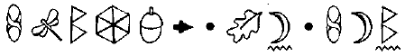
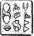

HAVEN ŞEHRİ
ARTEMİS buna niyetli olmamış olsa da Küpün izleme ışınlarını taraması çok uzaktan yansıyordu. Arama parametreleri o kadar belirsizdi ki Küp sondalarını bir taraftan uzaya yollarken, diğer taraftan yeraltına da yolluyordu.
Yüzeyin altında LEP, son goblin devriminin ardından sınırlarını açmıştı. Goblinlerin iktidarı ele geçirme girişimlerinden üç ay sonra baş karakterlerin çoğu tutuklanmıştı. B’wa Kell üçlüsünün soyutlanmış grupları, ellerinde Yumuş akburun lazerlerle hâlâ Haven tünellerinde koşturup duruyorlardı.
Müsait olan bütün LEP subayları, turist sezonu başlamadan Temizlik Operasyonuna yardım etmeleri için tekrar göreve çağrılmışlardı. Şehir Meclisinin en son istediği şey, Haven’in merkezindeki yaya plazasının dolaşılacak kadar güvenli olmadığı için turistlerin altınlarını Atlantis’de harcamasıydı. Her şeyden önce, turizm baş şehrin gelirinin yüzde on sekizine denk geliyordu.
Yüzbaşı Holly Short Düzeltme timinden geçici görevle alınmıştı. Genelde işi, vizesi olmadan yüzeye çıkmaya cüret eden perilerin peşinden yeryüzüne uçmaktı. Başıboş bir tek peri bile Çamur Adamlar tarafından yakalansa, o zaman Haven şehri yok olup cennete dönüşecekti*. Bütün çete üyesi goblinler Howler Tepesindeki cezalandırma tesislerinde göz yuvarlarını yalayana kadar, Holly’nin görevi bütün diğer LEP subaylarının aynısıydı: bütün B’wa Kell alarmlarına hızlı müdahale.
* Haven İngilizce'de cennet demektir. Yazar kelime oyunu yapmış.
Bugün, dört şamatacı goblini davaları için Polis Plazaya götürüyordu. Bir böcek şarküterisinde, bir gecelik oburluktan sonra mideleri şişmiş vaziyette, uyurken yakalanmışlardı. Oraya Holly’nin gelmiş olması onlar için bir şanstı çünkü şarküterinin sahibi olan cüce, pullarla kaplı dörtlüyü koca bir tavaya yerleştirmek üzereydi.
Holly’nin Temizlik Operasyondaki yardımcısı, LEP’in en çok nişanı olan subaylarından, meşhur Yüzbaşı Bela Kelp’in küçük kardeşi olan Onbaşı Grub Kelp’ti. Ama Grub, abisinin acıya dayanıklı kişiliğine sahip değildi.
“Bu son goblini kelepçelerken tırnağımın kenarını kaptırdım,” dedi ast subay, başparmağını çiğneyerek.
“Acı verici olmalı,” dedi Holly, ilgilenmiş görünmeye çalışarak.
LEP arabasının arkasında kelepçeli suçlularla Polis Plaza’ya doğru manyetik raydan gidiyorlardı. Bu aslında tam bir nizami araba değildi. Kısa süreli devrim sırasında B’wa Kell o kadar çok polis aracını yakmayı başarmıştı ki LEP motoru olan ve arkasında birkaç tutuklu için yer olan bütün her şeye el koymak zorunda kalmıştı. Aslında, Holly yanında LEP’in sprey boyayla yapılmış meşe palamudu simgesi olan bir seyyar lokanta kamyoneti kullanıyordu. Kademedeki gnomelar sadece servis kapağını ve fırınları çıkarmışlardı. Ne yazık ki kokuyu çıkaramamışlardı.
Grub yaralı baş parmağını inceledi. “Şu kelepçelerin keskin kenarları var. Bir şikayet mektubu yazmalıyım.” Manyetik raydaki araç kendi kendini yönetmesine rağmen, Holly yola konsantre oldu. Eğer Grub bir şikayet mektubu yazarsa bu onun ne birinci, ne de yirminci mektubu olacaktı. Bela’nın küçük kardeşi her şeyde bir hata bulurdu, kendisi hariç. Bu örnekte tamamen hatalıydı: bu vakumlu pleksiglas kelepçelerin keskin kenarları yoktu. Olsa bile, bir goblin diğer eldivene bir delik açmayı düşünebilir ve eline oksijen gelmesini sağlayabilirdi. Ve hiç kimse aracının arkasında ateş topları atan goblinler istemez.
“Tırnak kenarı kaptırmak yüzünden şikayet mektubu yazmanın önemsiz göründüğünü biliyorum ama hiç kimse beni önemsiz olmakla suçlayamaz.”
“Sen! Önemsiz mi! Bunu düşünme bile.”
Grub göğsünü şişirdi. “Her şeyden önce, LEP Düzenleme Timinden insan, Kâhya’yla karşılaşıp dayanan bir tek ben varım.”
Holly yüksek sesle homurdandı. Bunun, Grub’u Artemis Fowl’la savaşının hikâyesini tekrar anlatmaktan caydıracağını coşkulu bir şekilde umuyordu. Her seferinde öykü daha uzun ve fantastik bir hal alıyordu. Gerçekte, Kâhya, onu bir balıkçının küçük bir balığı tekrar suya atması gibi bırakmıştı.
Ama Grub bunu anlayacak gibi değildi.
“Çok iyi hatırlıyorum,” diye dramatik bir şekilde başladı. “Karanlık bir geceydi.”
Ve kelimelerinin sınırsız bir büyüsü varmış gibi şehirdeki bütün ışıklar söndü.
Sadece bununla da kalmadı, manyetik rayın enerjisi de kesilip onları donmuş bir otobanın orta şeridinde bıraktı.
“Bunu ben yapmadım, değil mi?” diye fısıldadı Grub.
Cevap vermeyen Holly, çoktan arabadan çıkmıştı bile. Üzerlerindeki, yüzey ışıklarından kopyalanmış güneş ışıkları kararıyordu. Yarı ışıklı ortamın son anlarında, Holly Kuzey Tüneline göz atabildiğinde, kapının kapandığını, acil durum ışıklarının kenarında döndüğünü gördü. Altı metrelik saf çelik Haven’ı dış dünyadan ayırıyordu. Benzer kapılar bütün şehirdeki stratejik kemerlerde aşağı iniyordu. Kilitlenme. Meclisin şehir çapında bir kilitlenmeyi başlatması için sadece üç sebep olabilirdi: sel, karantina ya da insanlar tarafından keşfedilmek.
Holly etrafına bakındı. Boğulan hiç kimse yok, hiç kimse hastaymış gibi görünmüyordu. Demek Çamur Adamlar geliyordu. En sonunda bütün perilerin en korkunç kabusu gerçekleşiyordu.
Acil durum ışıkları yukarıda yanıp sönüyordu, yumuşak bir beyazlıkta parlayan güneş ışıklarının yerini ürkütücü bir turuncu almıştı. Resmi araçlar, onları en yakın istasyona götürecek kadar enerjiyi manyetik raydan alacaklardı.
Sıradan vatandaşlar o kadar şanslı değillerdi; yürümek zorunda kalacaklardı. Yüzlercesi otomobillerinden istemeden çıktılar, protesto edemeyecek kadar çok korkmuşlardı. Bunu sonra yapabilirlerdi.
“Yüzbaşı Short! Holly!”
Bu Grub’du. Birisine bir şikayet mektubu yollayacağından hiç şüphe yoktu.
“Onbaşı,” dedi Yüzbaşı, araca dönerek. “Panik yapacak zaman değil. Bizim örnek olmamız gerekiyor...”
Arabada olanları gördüğünde nutku boğazında kaldı. Bütün LEP araçları, yüklerini ve kendilerini güvenli bir yere götürmek için, şimdiden itibaren resmi, manyetik raydan gelecek, on dakikalık enerji patlamasını alacaklardı. Bu enerji aynı zamanda pleksiglas kelepçelerin vakumunu da sağlıyordu. Pek tabii ki onlar resmi LEP araçlarını kullanmadıkları için acil durum enerjisi için izinleri yoktu: bu goblinlerin fark ettiği bir şeydi çünkü arabayı yakıp çıkmaya çalışıyorlardı.
Grub tökezlenerek arabadan çıktı, miğferi isten kararmıştı.
“Kelepçeler açıldı, bu yüzden kapıları yakmaya başladılar,” diye nefes nefese konuşurken güvenli bir uzaklığa çekiliyordu.
Goblinler. Evrimin küçük şakası. Git gezegenin en salak yaratığını seç ve onlara ateş yaratma kabiliyeti ver. Eğer goblinler aracın güçlendirilmiş içini yakmayı kesmezlerse kısa bir süre sonra erimiş metalin içinde kalacaklardı. Yanmaz olsanız bile kötü bir ölüm şekliydi bu. Holly LEP miğferindeki yükselticiyi çalıştırdı.
“Siz, arabadakiler. Ateşi kesin. Araç çökecek ve içinde kapalı kalacaksınız.”
Bir süre daha, duman havalandırmalardan çıktı. Sonra araç dingillerinin üzerine oturdu. Demir parmaklıkta bir yüz belirdi, çatal dili ağın gözlerden yılan gibi çıkıyordu.
“Bizim salak olduğumuzu mu düşünüyorsun, elf? Bu döküntü yığınını temizce yakıp geçeceğiz.”
Holly yaklaşıp hoparlörleri açtı.
“Beni dinle, goblin. Siz aptalsınız, hadi bunu kabul edip devam edelim. Eğer ateştoplar atmaya devam ederseniz o aracın tavanı eriyecek ve üzerinize bir insan silahından çıkan mermi kovanı gibi yağacak. Yanmaz olabilirsiniz ama kurşun geçirmez değilsiniz.”
Goblin göz çukurlarını yalayıp bunu bir kez daha düşündü.
“Yalan söylüyorsun, elf! Önce bu hapishanenin içinden bir delik açacağız. Sonra da senin içinden.”
Goblinler saldırılarını yenilediklerinde arabanın panelleri sallanıp bükülmeye başladılar.
“Merak etme,” dedi Grub, güvenli bir uzaklıktan. “Yangın söndürücüleri onların işini halledecek.”
“Edebilirdi,” diye düzeltti Holly, “eğer yangın söndürücüler, şu anda kesik olan ana enerji şebekesine bağlı olmasalardı.”
Bunun gibi bir seyyar lokanta manyetik yola çıkarmadan önce çok katı kurallara uymak zorundaydı. Bu durumda, birkaç saniyede bütün içerisini alev yavaşlatan köpükle dolduracak birkaç köpüklü söndürücü vardı. Alev köpüğünün iyi tarafı havayla temas ettiğinde sertleşmesiydi ama alev köpüğünün hiç de iyi olmayan tarafı ise yolculuk düğmesinin manyetik raya bağlı olmasıydı. Enerji olmayınca köpük de olmuyordu.
Holly kılıfından Neutrino 2000ini çekti. “Mandalı ben çevireceğim.”
Yüzbaşı Short miğferini kapattı ve arabanın sürücü bölümüne tırmandı. Mümkün olduğu kadar metalle dokunmamaya çalışıyordu çünkü LEPin paraşüt giysisindeki mikroteller aşırı sıcağı dağıtmak üzere dizayn edilmiş olsa da mikroteller her zaman dizayn edildikleri amaca hizmet etmezlerdi.
Goblinler sırt üstü yatmış tavan panellerine üst üste ateştoplar atıyorlardı.
“Kesin şunu!” diye emretti Holly, lazerinin namlusunu parmaklığın arasından uzatarak.
Goblinlerin üçü onu umursamadılar. Biri, büyük ihtimalle liderleri, pullarla kaplı yüzünü demir parmaklığa döndü. Holly göz çukurlarındaki dövmeleri gördü. Bu yüce salaklık gösterisi büyük ihtimalle eğer B’wa Kell dağılmamış olsaydı ona kesin bir terfi sağlardı.
“Hepimizi birden haklayamayacaksın, elf,” dedi, burnundan ve ağzından çıkan dumanlar arasından. “O zaman birimiz senin işini göreceğiz.”
Goblin haklıydı, bunun niye olduğunu anlamamış olsa bile. Holly birden kilitlenme sırasında ateş edemeyeceğini hatırladı. Kurallar, Haven’in yakından izlenebileceği olasılığına karşı kalkansız enerji dalgalanmalarının yapılmamasını belirtiyordu.
Holly’nin tereddüdü goblinlere gereken kanıtı verdi.
“Biliyordum!” diye bağırıp ızgaraya öylesine bir ateştop yolladı. Tel ağ kızardı ve kıvılcımlar Holly’nin siperliğine yağdı. Goblinlerin kafalarının üstündeki tavan tehlike bir şekilde eğildi. Birkaç saniye sonra yıkılacaktı.
Holly kemerinden bir piton dartı çıkardı, Neutrinonun ana namlusunun üzerindeki fırlatıcının içine çevirerek soktu. Fırlatıcı eski moda dalış zıpkınları gibi yaylıydı ve ısı patlaması yaymayacaktı: algılayıcıların dikkatini çekmeyecekti.
Goblin, bütün goblinlerin hapsedilmeden bir az önce sık sık yaptıkları gibi ki bu niçin bu kadar çoğunun hapsedildiğini açıklıyordu, eğlendi.
“Bir dart mı? Bizi ölümüne zorlamak mı istiyorsun, küçük elf?”
Holly arabanın arkasındaki yangın köpük hortumundan çıkan mandala nişan aldı.
“Lütfen sesinizi, keser misiniz?” dedi ve dartı fırlattı.
Goblinin kafasının üzerinden geçen dart hortumun mandalının çubukları arasına saplandı. Piton tel araba boyunca uzanıyordu.
“Iskaladın,” dedi goblin, çatal dilini sallayarak. Bu, goblin salaklığının bir ispatıydı; bir kilitlenme sırasında, eriyen bir araçta kapalı kalmış vaziyette ona ateş eden bir LEP subayı vardı ve hâlâ kontrolün kendinde olduğunu sanıyordu.•/
“Sana sessiz olmanı söyledim!” dedi Holly, piton telini sertçe çekip mandalı kopardı.
Sekiz yüz kilo yangın söndürme köpüğü püskürtme namlusundan saatte iki yüz mil hızla fışkırdı. Bunu söylemeye gerek yok ama bütün ateştopları söndü. Goblinler çoktan sertleşmeye başlayan köpüğün baskısıyla kımıldamadan sıkışıp kalmışlardı. Lider ızgaraya o kadar yapışmıştı ki dövmeli gözleri rahatça gözüküyordu. Biri “Ana,” dedi, diğer, “Bapa”. Yanlış söylemiş olsa da büyük ihtimalle bunu bilmiyordu.
“Ah,” dedi. Bu acıdan çok kuşkudan çıkmış bir sesti. Başka bir şey söylemedi çünkü ağzı katılaşan köpükle doluydu.
“Merak etme,” dedi Holly. “Bu köpük gözeneklidir, bu yüzden nefes alabileceksin ama kesinlikle yanmaz, bu yüzden yakarak çıkmak istersen sana bol şanslar.”
Holly araçtan çıkarken Grub hâlâ şeytantırnağını inceliyordu. Yüzbaşı miğferini çıkardı, paraşüt elbisesinin koluyla siperliğindeki isleri sildi. Üzerine hiçbir şey yapışmaması gerekiyordu; belki de yeni bir tabaka kaplatmaya yollamalıydı.
“Her şey yolunda mı?” diye sordu Grub.
“Evet, Onbaşı. Her şey yolunda. Sana teşekkür yok.”
Grub yüzsüzce alınmış göründü. “Ben çevreyi güvenliğe alıyordum, Yüzbaşı. Hepimiz aksiyon kahramanı olamayız ki.
İşte bu tipik Grub’du, her durum için bir bahane bulurdu. Holly onunla Sonra uğraşacaktı. Şimdi acil olan Polis Plazaya gitmek ve Meclisin şehri niçin kapattığını öğrenmekti.
“Sanırım karargâha dönmemiz gerekiyor,” diye önerdi Grub. “Eğer insan işgali varsa haber almadaki çocuklar benimle görüşmek isteyebilirler.”
“Sanırım karargâha dönmem gerekiyor,” dedi Holly. “Sen burada kalıyorsun ve enerji geri gelene kadar şüphelilere göz kulak oluyorsun. Ne dersin, bunu becerebilir misin? Yoksa şeytantırnağın buna olanak vermeyecek mi?”
Holly’nin kumral saçları terden diken diken olmuştu ve yuvarlak ela gözleri Grub’u bu konuyu tartıştırmaya cesaret ettirmeyecek gibi bakıyordu.
“Hayır, Holly... Yüzbaşı. Bu işi bana bırak. Her şey kontrol altında.”
Pek öyle olduğunu sanmıyorum, diye düşündü Holly, Polis Plazaya doğru koşmaya başlarken.
Şehir tamamen kaosa kapılmıştı. Sokaktaki bütün vatandaşlar inanamayan gözlerle çalışmayan araçlarına bakıyorlardı. Bazı genç periler için cep telefonlarını kullanamamak dayanılamayacak bir şeydi. Sokaklara çökmüş yavaşça hıçkırıyorlardı.
Polis Plaza, ışığa gelen güveler gibi soru soran kişilerle doluşmuştu. Burası şehirdeki gerçekten tek ışık olan yerdi. Hastaneler ve acil durum araçlarında hâlâ enerji vardı ama LEP karargâhları hâlâ işleyen tek hükümet binalarıydı.
Holly kalabalığın içinden lobiye doğru kendine zorla yol açtı. Halkla ilişkiler servisinin önündeki kuyruk merdivenlerden inip kapıdan dışarı çıkıyordu. Bugün herkes aynı soruyu soruyordu: Enerjiye ne oldu?
Görevler bölümüne hızla dalarken Holly’nin dudaklarında da aynı soru vardı ama onu kendine sakladı. Oda, gücün tam kadro yüzbaşılarının yanı sıra üç bölge komutanı ve Meclis üyelerinin tamamı olan yedisiyle doluydu.
“Ah,” dedi Başkan Cahartez. “İşte en son yüzbaşı.”
“Acil durum elektriğini alamadım,” diye açıkladı Holly. “Yönetmelik dışı araç.”
Cahartez resmi konik şapkasını düzeltti. “Bahanelere zaman yok, Yüzbaşı, Bay Foaly siz buraya gelene kadar brifingine başlamadı.”
Holly yüzbaşılar masasında, Bela Kelp’in yanındaki iskemlesine oturdu.
“Grub iyi mi?” diye fısıldadı Kelp.
“Bir şeytantırnağı çıktı.”
Bela gözlerini yukarı dikti. “Hiç şüphesiz şikayet edecektir.”
Sentor Foaly kapılardan içeri tırıs girdi, kolları disklerle doluydu. Foaly, LEP’in teknik dehasıydı ve insanların perilerin yeraltında saklandıkları yerleri bulamamalarını asıl nedeniydi. Belki de bu değişmek üzereydi.
Sentor işinin ehli bir şekilde işletme sistemine diskleri yükleyip duvar büyüklüğündeki plazma ekrana birkaç pencere açtı. Ekranda çeşitli karmaşık görünüşlü algoritmalar ve dalga boyları belirdi.
Foaly gürültülü bir şekilde boğazını temizledi. “Bu göstergelerden yola çıkarak Başkan Cahartez’e kilitlenmeyi başlatmasını tavsiye ettim.”
Recon Kumandanı Root yanmamış bir mantar purosunu emdi. “Sanırım, orada sadece eğri büğrü çizgilerden başka bir şey görmediğimi söylersem bütün odadakiler adına konuşmuş olurum, Foaly. Hiç şüphesiz bunlar senin gibi akılı bir midilli için anlamlıdır ama geri kalanımızın Gnomeca bir açıklamaya ihtiyacı var.”
Foaly iç çekti. “Çok basitçe açıklıyorum. Gerçekten çok basitçe. Pinglendik. Bu yeteri kadar açık mı?”
Açıktı. Odayı ölüm sessizliği kapladı. Pinglenmek aramak için sonarın tercih edilen metot olduğu günlerden kalma eski bir denizcilik terimiydi. Pinglenmek sondalanmanın argo karşılığıydı. Birisi peri halkının yeraltında olduğunu biliyordu.
Root sesini çıkarabilen ilk kişi oldu. “Pinglendik. Peki bizi kim pingledi.”
Foaly omuz silkti. “Bilmiyorum. Pinglenme sadece birkaç saniye sürdü. Tanımlanabilen bir özelliği yoktu ve izi sürülemiyordu.
“Ne buldular?”
“Oldukça çok şey. Kuzey Avrupa’daki her şey. Faaliyet alanları, Nöbetçiler. Bütün kamera-kameralarımız. Her biri hakkında yüklenmiş bilgiler.”
Bu, felaket bir haberdi. Birisi ya da bir şey sadece birkaç saniye içinde Kuzey Avrupa’daki perilerin gözetlediği bütün her yeri sondalamıştı.
“O bir insan mıydı,” diye sordu Holly, “yoksa bir yaratık mı?”
Foaly ışının dijital simgesini gösterdi. “Kesin bir şey söyleyemem. Eğer insansa yepyeni bir şey olmalı. Birdenbire ortaya çıktı. Bildiğim kadarıyla hiç kimse bu kadar ileri bir teknoloji geliştirmemişti. O şey her ne ise bizi açık bir kitap gibi okuyor. Güvenlik şifrelerim sanki yokmuş gibi dağıldılar.”
Cahartez resmi şapkasını çıkardı, artık protokolle ilgilenmiyordu. “Bu, Peri Halkı için ne manaya geliyor?” “Söylemesi zor. En iyi ve en kötü senaryolar var. Esrarengiz konuğumuz ne zaman isterse bizim hakkımızdaki her şeyi öğrenebilir ve medeniyetimize istediği şeyi yapabilir.”
“Ya en iyi senaryo?” diye sordu Bela.
Foaly derin bir nefes aldı. “O en iyi senaryoydu.”
Yarbay Root, Holly’yi bürosuna çağırdı. Oda, masadaki temizleyiciye rağmen leş gibi puro dumanı kokuyordu. Foaly çoktan gelmişti bile, parmakları yarbayın klavyesi üzerinde hayal meyal görünüyordu.
“Sinyal Londra’da bir yerden çıkıyordu,” dedi sentor. “Bunu bilme nedenimiz o anda ekrana bakıyor olmamdı.” Klavyeden geriye yaslanıp kafasını iki yana salladı. “Bu inanılmaz bir şey. Bir tür melez teknoloji. Bizim iyon sistemimiz gibi ama tam değil; sanki birazcık daha gelişmiş.”
“Nasıl olduğu şu anda önemli değil,” dedi Root. “Beni endişelendiren kim olduğu.”
“Ne yapabilirim, efendim?” diye sordu Holly.
Root ayağa kalktı ve plazma ekrandaki Londra haritasına gitti.
“Bir gözetim takımı almanı ve yukarıya gidip beklemeni istiyorum. Eğer tekrar pinglenirsek, birinin harekete geçmeye hazır bir vaziyette orada olmasını istiyorum. Bu şeyi kaydedemeyiz ama kesinlikle sinyalde bir görüntü alabiliriz. Ekranda görünür görünmez sana koordinatları yollarız ve sen de araştırabilirsin.”
Holly başıyla onayladı. “Bir sonraki tren ne zaman?”
Tren, Recon subaylarının titanyum yumurtalarla yüzeye çıktıkları magma patlamalarının LEP’deki adıydı.
Kaptanlar kendi deneyimlerine dayanarak bu prosedüre “tren sürmek” derlerdi.
“Şansın yok,” diye karşılık verdi Foaly. “Çavlanlarda iki gün daha hiçbir şey yok. Mekiği alman gerekiyor.” “Ya kilitlenme?”
“Stonehenge’e ve uydu bağlantılarına tekrar enerji verdim. Bunu riske etmemiz gerekiyor; senin yüzeye çıkman lazım ve bağlantımız olması gerekiyor. Medeniyetimizin geleceği buna bağlı olabilir.”
Holly omuzlarına yüklenen sorumluluğun ağırlığını hissetti. Bu medeniyetimizin geleceği durumu son günlerde sık sık oluyordu.